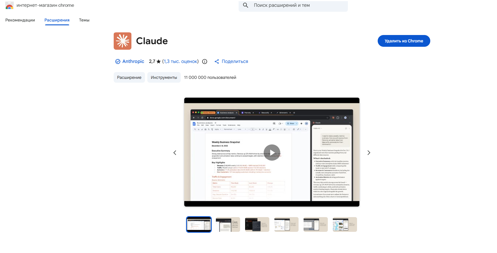
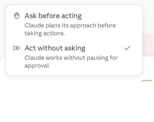

Как ИИ управляет браузером — от установки и первых команд до тестирования веб-билдов. С живыми примерами: что получилось, а что нет.
Агент открыл игру и выключил звук — верно. А вот на последнем шаге ошибся: «профиль» он понял по-своему — вышел из игры на Facebook и открыл профиль там, а не игровой профиль внутри клиента.
Вывод, с которого начинается вся работа с агентом: формулировка решает. «Профиль» без уточнения — двусмысленно. Надо было писать «мой профиль внутри игры».
Отдельное расширение из Chrome Web Store. Даёт боковую панель с чатом в настоящем Chrome. Задача пишется словами — Claude перехватывает активную вкладку и работает в ней под уже открытыми логинами.
Это и есть заявленная тема — плагин, где Claude появляется чатом и берёт вкладку на себя.
Рядом с чатом приложения — встроенная вкладка браузера, которой Claude управляет напрямую. Ставить расширение не нужно — движок тот же.
Удобно, чтобы гонять веб-билды с mirror: задача в чат — Claude водит вкладку и присылает отчёт обратно.
Способ А — работа в личном Chrome с готовыми логинами. Способ Б — рабочий инструмент для тестирования билдов, без установки.
Add to Chrome → Add extension. В тулбаре появляется иконка-пазл.
При запуске агент предлагает выбрать, как себя вести:

mirror.kosmosteam.com/..., сделай то-то, проверь консоль». Агент сам открывает вкладку и водит её — навигация, клики, ввод, скролл.Разница со способом А в одном: здесь встроенная вкладка приложения, а плагин управляет личным Chrome с уже открытыми логинами. Движок и возможности — те же.
Сайт, на котором лежат эти слайды, никто не публиковал руками. Обе половины работы сделали агенты Claude — ровно те два инструмента, о которых идёт речь. Получилась живая иллюстрация темы на самой презентации.
Дальше — кто именно что сделал, и запись процесса.
По одной текстовой команде агент прошёл ~110 шагов в интерфейсе GitHub: создал публичный ChromUsePresentation, добавил README.md, включил GitHub Pages (Deploy from branch → main → /root) и вернул готовую ссылку на сайт.
Через встроенную вкладку агент зашёл на GitHub, считал точный путь к репозиторию, собрал локальный git, закоммитил файлы презентации и запушил в main. GitHub Pages подхватил пуш и сам пересобрал сайт.
Живой сайт: artemkopyl-dot.github.io/ChromUsePresentation/ — любой следующий git push в main обновляет его автоматически, по той же ссылке.
Все ~110 шагов агента в интерфейсе GitHub ужаты в короткий ролик. Для покадрового разбора конкретного шага — 1×.
Не «протестируй игру», а конкретная цель, маршрут и критерий успеха. Пример из официальной документации:
read_page — дерево страницы (DOM/accessibility)
get_page_text — текст страницы
find — поиск элемента
чтение console и network
screenshot (без сохранения на диск)
клики, ввод текста
навигация по URL
управление вкладками и окнами
запись GIF
сохранение скриншота на диск
Читающие действия безопасны и идут без остановок. Всё, что меняет состояние вкладки, можно поставить на подтверждение — для наглядности и контроля удобно держать режим «спрашивать перед действием».
console и фильтрует по паттерну. Ошибки JS всплывут тут.Итог агент возвращает текстом в чат: что сделал, что нашёл, где остановился. Это и есть отчёт, который прикладывается к задаче.
Промпт целиком — в чат плагина или десктоп-приложения:
Справа — как выглядит проговаривание шагов. Схема иллюстративная; целевой флоу — самые частые сценарии билда.
Сборка и заливка уже автоматизированы. Не хватает шага «кто-то походил руками» перед тем, как звать живого QA. Агент закрывает именно этот разрыв. Первые кандидаты на прогон:
Пройти обучение от старта до конца, убедиться, что нет застреваний. Ошибки консоли на каждом шаге.
Открыть табы, начислить валюту/ресурсы, проверить, что UI обновился и сервер ответил без 4xx/5xx.
Проверить цены и тексты, поймать наезжающие тултипы, обрезанный текст, опечатки локализации.
Селекторы и ожидания прописаны в коде. Быстро и детерминированно на тысячах прогонов в CI — но ломаются от смены вёрстки, и починка порой дороже написания.
Задал цель — агент сам ищет путь и попутно читает консоль/network. Медленнее на один прогон, но не требует переписывать скрипт при каждом изменении UI.
Скриптовые тесты не уходят. Агент хорош там, где UI живой и меняется чаще, чем успевают чинить тесты, и для exploratory-прогона, который скриптом вообще не пишут.
| Симптом | Причина | Что делать |
|---|---|---|
| Браузер не отвечает | Модалка (alert/confirm) блокирует страницу | Закрыть диалог вручную → сказать агенту продолжить |
| No tab available | Агент дёрнулся раньше готовности вкладки | Попросить создать новую вкладку и повторить |
| Застрял на логине / CAPTCHA | Агент специально останавливается на человеке | Залогиниться или пройти капчу вручную → «продолжай» |
| Плагин не реагирует (способ А) | Расширение выключено или уснуло | Включить/переподключить в chrome://extensions |
| Кликнул не туда | UI изменился / элемент не распознан | Уточнить шаг словами: «кнопка справа сверху, с иконкой X» |
Попытка отыграть партию в билде Spades STAGE: игра в реальном времени, таймер хода ≈ 5 секунд. Агент не укладывался в окно, и партия «играла себя» по таймауту.
Вывод одной строкой: когда таймаут короче времени реакции, автоматизация проигрывает.
5 секунд короче, чем «скриншот + рассуждение + действие». Агент думает медленнее, чем требует игра в реальном времени.
Игра рисуется на <canvas> в iframe. Консоль и network не отдают состояние — проверено, пусто. Ход читается только по скриншоту, а это ещё медленнее.
facebook.com в блоклисте агента: сам открыть и водить игру он не может, билд пришлось запускать руками.
Куда это ложится: браузерный агент силён на пошаговых, без жёсткого таймаута флоу с состоянием в DOM/консоли — FTUE, AdminPanel, магазин. И плох на latency-critical пиксельном геймплее. Это не баг, а известная граница — тесты планируются с её учётом.
Пройти по строкам из CSV/таблицы и завести десятки записей в веб-интерфейсе подряд.
Собрать имена, цены, статусы с веб-страниц в структурированный CSV/файл.
Gmail, Google Docs, Notion, Sheets: например, черновик апдейта по свежим коммитам прямо в Google Doc.
Собрать данные с нескольких сайтов и свести в один результат за один проход.
Прочитать console/network, найти причину бага и тут же поправить код, не переключая контекст.
Снять GIF/видео прохождения флоу для баг-репорта, ревью или онбординга.
Плагин в личном Chrome (готовые логины) или встроенная вкладка в десктоп-приложении. Движок один.
URL, действия по пунктам, что проверить. Двусмысленные слова уточнять — иначе агент трактует сам.
Силён на пошаговых флоу с сигналами в DOM/консоли. Плох на latency-critical геймплее и заблокированных доменах.
Один флоу (FTUE или AdminPanel) прогнать через агента на ближайшем staging-билде с mirror. Посмотреть: что нашёл, что упустил, сколько времени сэкономил — и решить, встраивать ли в пайплайн.
Artem Kopyl · artem.kopyl@kosmos.games